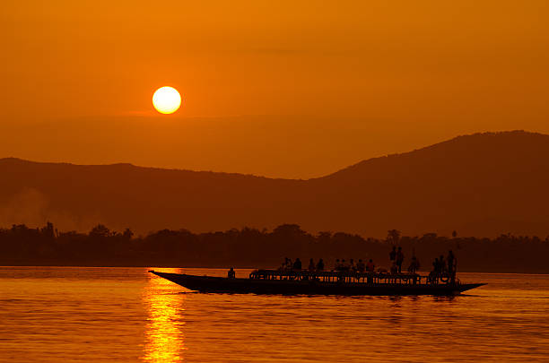
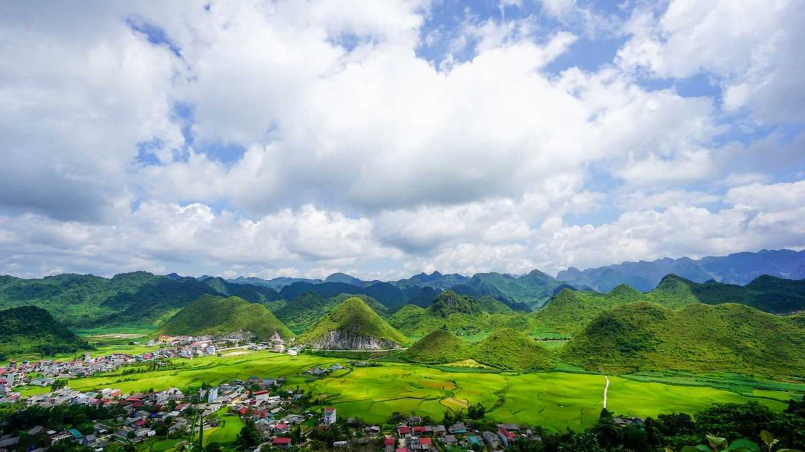
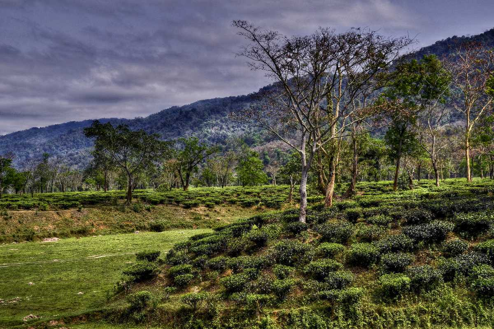
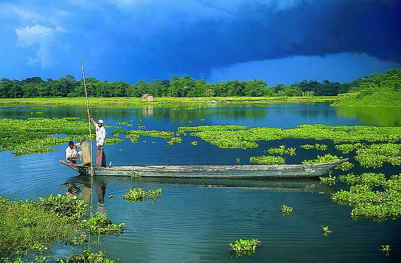

Home to the largest population of the one-horned rhino on earth, Kaziranga National Park is one of India’s national treasures in terms of flora and fauna. Located in the state of Assam in North-Eastern India, its total area is shared by the districts of Nagaon, Golaghat and Karbi Anglong placing it roughly at the centre of the state.

Famously regarded as the gateway to North-East India, Guwahati is the largest city in the state of Assam.
Located on the Nilanchal Hill in the western part of Guwahati in Assam, Kamakhya Temple is one of the most revered shrines of Goddess Shakti in India.
Chandubi Lake is said to have mesmerised a British Officer who came to witness the sunset. This is believed to be the point where the name of the lake originated. Chandubi translates to the setting of the sun. Many other versions are speaking about the origin of the lake’s name, but this is deemed the most appropriate.
Famous for its culture, mosques, tombs, gardens and most importantly - its tea plantations, Jorhat is a culturally and commercially important city in the state of Assam. The headquarters of Jorhat district, this city is also known as the tea capital of India.

Umananda Temple is located on Peacock Island that lies on the mighty Brahmaputra River. This serene place of worship is named after and dedicated to Lord Shiva.

Diphu, the headquarters for the district of Karbi-Anglong in southern Assam, is located at a distance of about 250 Km from Guwahati. It is a small picturesque town which is a weekend popular picnic spot for people from nearby regions.
One can experience the best of everything in Darang from spellbinding nature to a rich past and unique culture and heritage
Nagaon holds the distinction of being Assam's most populous district and one of the largest district in the area.
Hailakandi, located 312 kms south of Guwahati is a beautiful destination nestled in the heart of Barak Valley of Assam. The town is the administrative headquarters of the district of Hailakandi.

Located at the base of the eastern Himalayas in Assam, Nalbari is a perfect getaway to explore the wilderness of nature with its vast Paddy fields and dense forests.

Majuli, a verdant and eco-friendly freshwater island nestled in the Brahmaputra River, is a pristine haven just 20 kilometers from Jorhat city in Assam.